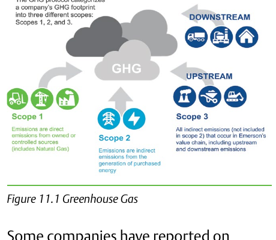

Activity: Scope and Relevance Judgment

Given a specific technology from the source's own list, judge which emissions scope(s) it addresses and whether it's genuinely control-valve-relevant or merely real-but-irrelevant to this engineering role — defend the judgment against a plausible counter-argument for the opposite conclusion. Component Index: cvh-cmp-greenhouse-gas-scopes, cvh-cmp-sustainability-decarbonization-table.